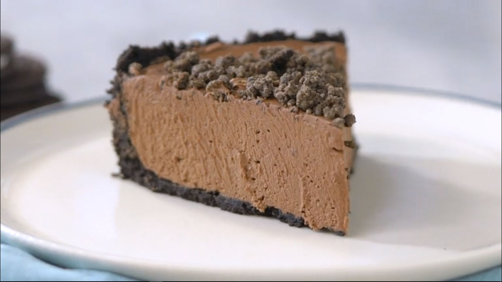

Torta Crocante de Oreo

INGREDIENTES
- 30 biscoitos Oreo sem recheio
- 100g de manteiga derretida
- 400g de chocolate meio amargo derretido
- 2 caixinhas de creme de leite
- 10 biscoitos Oreo sem recheio triturados
- ⅓ de xícara de farinha de trigo
- 1 colher de sopa de açúcar
- 50g de manteiga gelada em cubos
INSTRUÇÕES
- Separar os recheios de 3 pacotes dos biscoitos e triturar no processador.
- Juntar a manteiga derretida e misturar rapidamente.
- Dispor em uma forma redonda de fundo removível, cobrindo o fundo e a borda. Levar para à geladeira por 30 minutos.
- Em um recipiente, colocar o chocolate meio amargo derretido creme de leite. Bater bem com o auxílio de uma batedeira.
- Dispor o creme por cima da massa de biscoitos e levar para a geladeira por 2 horas para firmar.
- Em uma tigela, misturar, com a ponta dos dedos, o biscoito triturado, a farinha de trigo, o açúcar e a manteiga até obter uma farofa. Dispor em uma assadeira e levar ao forno preaquecido a 180 graus por, aproximadamente, 20 minutos ou até que esteja dourado. Reservar para esfriar.
- Finalizar a farofa crocante de biscoito, com os biscoitos Oreo e servir.